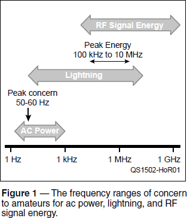
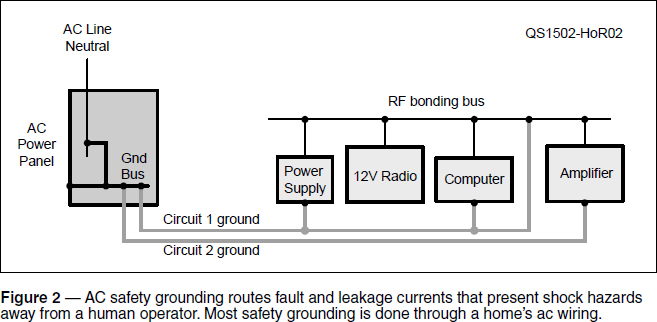
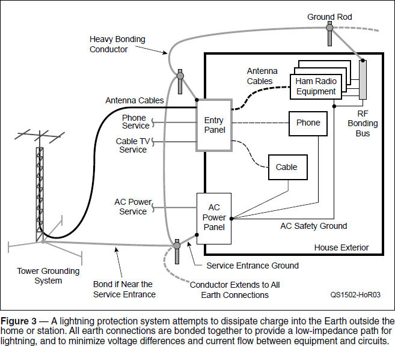

Experiment #145 — Grounding and Bonding Systems
Along with effective receiving and transmitting, a station’s design must address three important electrical requirements: ac power safety, lightning protection, and equipment-to-equipment bonding. Figure 1 shows that the frequency ranges involved are quite different, requiring different solutions.

As you learned in the previous “Hands-On Radio” column, however, few parts of an amateur station exist in isolation, particularly as frequency goes up. Thus, the measures taken to satisfy these requirements can affect and even compromise each other if performed improperly. Standard methods of protection from shock hazards and lightning can be found in the National Electrical Code (NEC).1
Low-Frequency AC Safety
Reducing the detailed language of the NEC to simple terms, you must connect all exposed metal from ac-powered equipment to a central, common ground. All equipment electrically connected to an ac-powered device should have a permanent safety connection even if the equipment is unpowered, like an antenna tuner or audio switch. (Don’t depend on removable cables for safety connections.)
This connection is usually referred to as the ac safety ground, and the connection is made through the “third wire” of your ac power wiring; the bare or “green” wire. Figure 2 shows how power and enclosure grounds are connected through the ac ground wire to the breaker panel’s ground bus.

If a short circuit develops between the ac wiring and the enclosure of a piece of equipment, the resulting fault current in the ac safety ground trips a circuit breaker in the hot conductor. Leakage current is mostly due to filter capacitance and parasitic capacitance between the phase (hot) ac conductor and the equipment chassis or enclosure.
Ground Fault Circuit Interrupter (GFCI) breakers go one step further and monitor the balance of current on the hot and neutral lines of an ac circuit. If an imbalance is detected, it is assumed that the missing current is flowing on the equipment chassis or enclosure, where it can present a shock hazard, and the GFCI trips to remove power.
Since the ac safety ground is concerned with currents at the power line frequency and its first few harmonics, the length of the connection doesn’t matter much. At 60 Hz, a 50-foot conductor is only 3 millionths of a wavelength long. Similarly, resistance in the ac safety ground path or an imbalance of a few ohms between circuits doesn’t matter much from the perspective of safety. (Imbalances might be significant for signal-level connections.) The important thing is that hazardous current takes a path that doesn’t include you!
Lightning Protection
Another area of concern also addressed by the NEC is that of lightning protection.2 The goal of lightning protection wiring is two-fold. First, a low-impedance path to the Earth and between earth connections is provided for the high currents involved, often thousands of amps. Second, bonding keeps all equipment and circuits at close to the same voltage so that voltage differences and current flowing between them are minimized.
Lightning energy is distributed mostly between 100 kHz and 10 MHz — far higher in frequency than ac power — so that wiring inductance dominates the performance of the protection system. Voltage across a conductor is equal to its inductance multiplied by the rate-of-rise of the lightning’s current pulse in amps/second. For example, a straight wire 1 meter long has an inductance of about 1 μH. If the lightning’s current rises 20 kA in 2 μs, the voltage between the ends of the wire is 1 μH × 20 kA / 2 μs = 10,000 V! Voltage transients large enough to do significant damage can also be induced on your wiring by the magnetic field of nearby strikes as well as being conducted to your wiring by ac power, phone, or cable TV systems.
Figure 3 shows the basic approach for lightning protection. AC safety ground wiring is included, as shown in Figure 2. The additional service entrance ground connection from the ac power distribution panel to a ground rod establishes a local earth connection for lightning protection of ac-powered equipment and appliances. In the shack, ham equipment-to-equipment bonding is also shown with its required connection to the ac safety ground.

Any earth connections at the ac power panel, other service entries, or an earth connection to the shack RF bonding bus must be bonded together by heavy copper wire or wide copper strap to provide a mechanically secure, low impedance connection. Using #6 AWG or heavier wire is recommended and a minimum size may be specified by your local building codes.
All antenna cables (including feed lines and rotator control cables) should be routed through an entry panel where they can be protected by lightning arrestors to route high-voltage, high-current surges to an earth connection. This minimizes the voltage between cables and the resulting current that would flow through the equipment connections as a result. Other services may have their own entry panels and earth connections.
Each separate earth connection for safety, or to manage RF energy, creates a path through the house for lightning and can result in significant voltages from lightning surges or ac power faults. To minimize these voltages, bond all external earth connections together. The ground rods and bonding conductor provide a low impedance path bypassing the house for lightning’s charge and keep equipment close to the same voltage at low frequencies. The goal is to dissipate as much lightning energy as possible outside while minimizing large voltage differences and current surges that damage equipment inside.
The extra ground system shown next to the tower helps dissipate charge, too. This is particularly important if your tower is not located close to the house and its bonded earth connections. If the tower is used as a vertical antenna, a radial ground screen can help spread out charge from lightning along with its RF function. What a great reason to create another antenna!
Tying It All Together
Let’s review. All of your exposed connections to equipment powered from the ac line, or connected to such equipment, need to be connected to the ac safety ground. All external earth connections must be bonded together outside your home with heavy wire. If possible, use a single, grounded entry panel for all signal connections entering your house. If multiple entry points are used for different services, connect those panels or lightning arrestors to the outside bonding conductor. Finally, inside your shack, bond the equipment together with short, heavy connections to a common bus.
The Safety chapter in The ARRL Handbook and the ARRL’s Technical Information Service web page on safety (www.arrl.org/safety) both contain lists of useful references, guidelines, and tutorials.3 W8JI’s website (www.w8ji.com/station_ground.htm) discusses station grounding and shows examples of an entry system and wiring practices. K9YC has published a slide-show tutorial on grounding (www.audiosystemsgroup.com/GroundingAndAudio.pdf) covering a variety of concerns.
Notes
1The NEC is a good set of reference standards but your local city or county building department may have additional requirements based on the specific circumstances in your area. The authority having jurisdiction (AHJ), such as a city or county building department, determines what is required at your location.
2NEC Article 810, “Radio and Television Equipment,” Section III covers “Amateur and Citizen Band Transmitting and Receiving Stations — Antenna Systems.” Bonding requirements are discussed in 810.58, and towers are discussed in 810.15.
3The ARRL Handbook, 92nd edition, ARRL, Chapter 28.